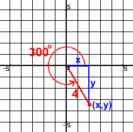

The
point (x, y)
can be located by finding the horizontal and vertical components
of r. We can do that by
substituting the radius and the degree
(r, d) into the
following formulas.
x
= r * cos(d)
y = r *
sin(d)
So we end up with;
x
= 4 * cos(300) = 2
y = 4 * sin(300) = -3.46
As we can
see, the
point (4, 300°)
in
polar coordinates is equivalent to a point with the rectangular
coordinates (2, -3.46)
|

x = r * cos(d)
y = r *
sin(d)
|